Problema
I programmi nel tempo sono sempre cresciuti in termini di necessita di memoria quindi caricarli tutti in memoria è sempre più complesso si iniziarono a creare delle soluzioni e negli anni 60 si introdussero gli overlay: la tecnica degli overlay consiste nel suddividere un programma in piu codici detti overlay difficolta di implementazione e nessuna astrazione, erano letteralmente pezzi di codice
Memoria virtuale
è una versione più complessa e sicuramente astratta del metodo con base e limite consiste nel suddividere spazi di indirizzi in pagine, ogni pagina rappresenta uno spazio contiguo di indirizzi. il programma avra l’illusione di puntare da una parte invece punterà su una pagina che chissà dove cazzo sta
- tutto questo viene gestito dal s.o.
- tutte le pagine non devono stare in memoria
- esiste una mappa che tiene traccia di tutte le pagine e se non è presente page fault e intervento del s.o. per ora prendiamo per scontato che siano tutte pagine da si vuole quindi creare una illusione per il programma di avere uno spazio di indirizzi più esteso. se ad esempio abbiamo bit possiamo rappresentare indirizzi virtuali
Cosa avviene al livello di processo?
mettiamo caso di avere una memoria fisica da 32K, se ogni pagina effettiva occupa 4K avremo 8 frame (pagine fisiche)
- abbiamo poi 16 pagine, ma non tutte sono mappate fisicamente in memoria
- la mappatura avviene puntando all’indirizzo della pagina reale
- per effettuare la mappatura useremo la MMU memory managment unit(la vediamo poi) 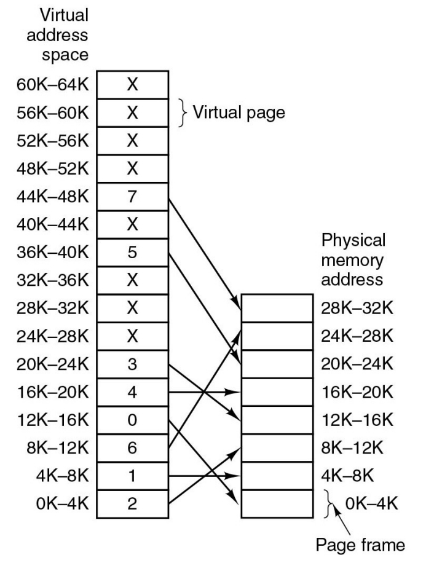
- possiamo vedere come il processo crede che abbia più memoria
Cosa succede se una pagina non è mappata?
- avviene un page fault
- sposto un frame usato raramente sul disco
- metto al posto di quel frame la pagina virtuale
- aggiorno la MMU(aggiungo alla tabella in quale pagina virtuale è mappato il frame)
ESEMPIO PRATICO
- Un programma vuole scrivere nell’indirizzo 32780 che quindi è compreso nella pagina 32K-36K
- questa pagina però non è mappata (ha la X)
- viene applicato un algoritmo che sposta una pagina secondo dei criteri, in memoria disco
- la pagina virtuale potrà ora puntare al frame libero
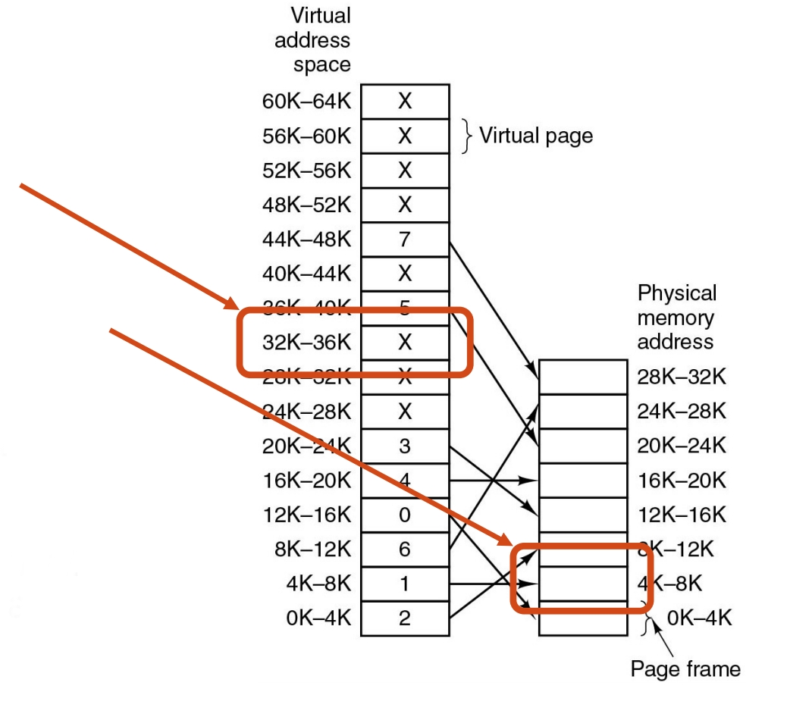
mettiamo di avere MOV REG,32780
ci posizioniamo nella pagina che sarà ovvero
- la pagina è un insieme di indirizzi e per capire dove posizionarci esattamente faremo
- che rappresenta lo spazio nella singola pagina poi dobbiamo portare il tutto nella memoria fisica effettiva dei frame mettiamo che la pagina che si liberi è la quindi ci sommiamo lo spazio calcolato prima nella singola pagina e ci ritroviamo a scrivere su
Funzionamento interno della MMU Con lo stesso scenario di prima, ma questa volta vogliamo accedere all’indirizzo virtuale 8196. Per farlo dobbiamo tradurlo tramite la MMU, in un indirizzo fisico. La rappresentazione binaria di 8196 è Dove:
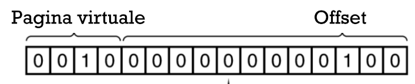
-
I PRIMI 4 BIT rappresentano il numero di pagina virtuale
- Con 4 bit possiamo identificare fino a pagine virtuali (da 0 a 15)
-
I RESTANTI 12 BIT rappresentano la posizione all’interno della pagina (l’offset)
- Con 12 bit possiamo rappresentare byte (la dimensione di ogni pagina o frame fisico)
Abbiamo quindi:
QUINDI il dato si trova al quarto byte della pagina virtuale 2. Ora, tramite la tabella delle pagine:
-
Cerchiamo la pagina virtuale 2 nella tabella
-
La tabella indica che la pagina virtuale si trova nel frame fisico 110, ossia 6 (foto)
-
La MMU utilizza questa informazione per calcolare l’indirizzo fisico L’indirizzo fisico si calcola combinando
- La base del frame fisico ()
- L’offset () Quindi per il frame 6: 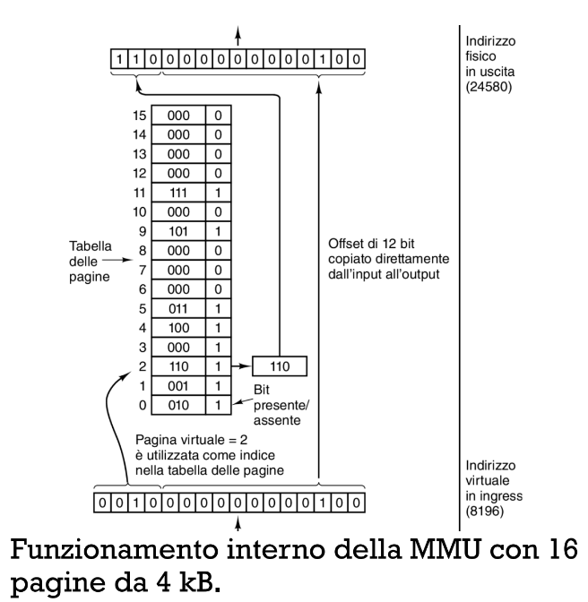
EVOLUZIONE DEGLI INDIRIZZI E TABELLA DELLE PAGINE
32 BIT
- ULTIMI 12 BIT = posizione nei 4096 byte della pagina
- PRIMI 20 BIT = possiamo avere nella tabella voci (UN BOTTO!!!!)
64 BIT
- ULTIMI 12 BIT = posizione nei 4096 byte della pagina
- PRIMI 52 BIT = possiamo avere nella tabella voci (sono talmente tante che che vengono usate solo ).
Come è composta una voce della page table?
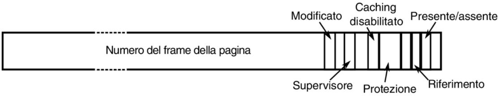
- numero del frame quindi la posizione effettiva in memoria 12 bit negli esempi visti fino ad ora
- un bit che indica se la pagina è in memoria oppure no(PRESENTE/ASSENTE)
- bit di protezione, quel classico bit che dà ruoli di scrittura lettura esecuzione ecc…
- bit supervisor, se è o meno eslusiva al livello supervisor
- Bit modificato(M) o riferimento(R) viene soprattutto usato per gli algoritmi che vedremo dopo
- M se la pagina è stata modificata
- R se la pagina è stata acceduta un processo ha la sua tabella nel PTBR(Page Table Base Register) ovvero un registro
Come si velocizza la paginazione?
- per non avere colli di bottiglia la ricerca di una pagina all’interno di una tabella deve impiegare molto meno rispetto all’esecuzione dell’istruzione stesa
- es: una istruzione impiega la ricerca deve avvenire in
1 singola voce indica, in teoria 1 singola pagina, questo significa che in una ipotetica tabella dovremmo avere 64 miliardi di voci,il che renderebbe la tabella estremamente pesante soprattuto perchè ogni processo ha la sua tabella
- sto tenendo in considerazione che con 48 bit di indirizzamento e 4KB ho 64 miliardi di pagine la soluzione la vedremo dopo con i TLB
Come si salva una pagina?
-
Tabella delle pagine in Registri Hardware
- ogni singola voce della tabella è un registro
- è facile da implementare
- é lento perché ogni volta che cambio tabella devo ricaricare tutti i registri ad ogni cambio di contesto
-
Tabella delle pagine in Memoria Principale
- Abbiamo tutta la tabella nella RAM e un solo registro che punta al suo inizio(tipo una lista)
- è facile da cambiare perché basta cambiare l’indirizzo del puntatore
- è lento scorrere la lista
Entrambi gli approcci fanno cacare la soluzione è il TLB
TLB=(Translation Lookaside Buffer) soprattutto perché quando un processo viene eseguito di solito accede alle solite pagine il TLB è un dispositivo hardware che mappa le recenti conversioni da indirizzi virtuali in fisici delle pagine.
- ci consente di non accedere in memoria e quindi alla tabella delle pagine
Com’è strutturato il TLB?
- ha un piccolo numero di voci
- una variabile indica la validità o meno della pagina
- una indica il numero della pagina nella memoria virtuale
- una se è stata modificata
- una il tipo di accesso
- e una il corrispettivo frame in memoria fisica 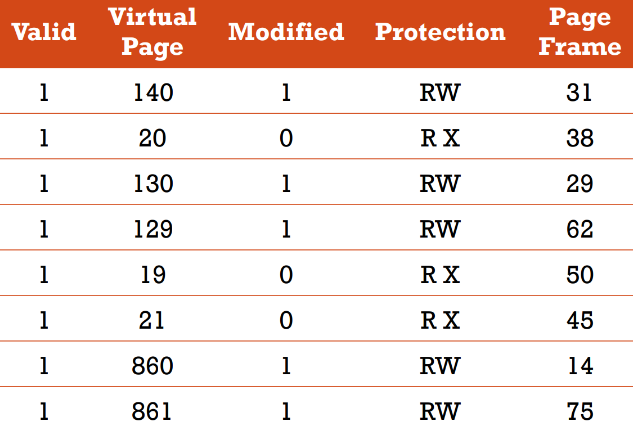
Come funziona il TLB?
- la MMU prima di fare una conversione da virtuale a fisico controlla la TLB
- se è presente la prende sennò no(TLB MISS) e la aggiunge alla TLB
TIPOLOGIE DI TLB MISS
- SOFT MISS: è quando non ho la pagina nel TLB ma nella tabella delle pagine
- HARD MISS: quando è in memoria non volatile SSD,HDD…
- page table walk indica l’azione di ricerca nelle tabelle delle pagine
- se un accesso a un indirizzo non è valido ho un segmentation fault
Soluzione alle tabelle giga enormi (multi-level page table)
- queste page table vengono attraversate dall’mmu
1. PAGE TABLE A 2 LIVELLI X86
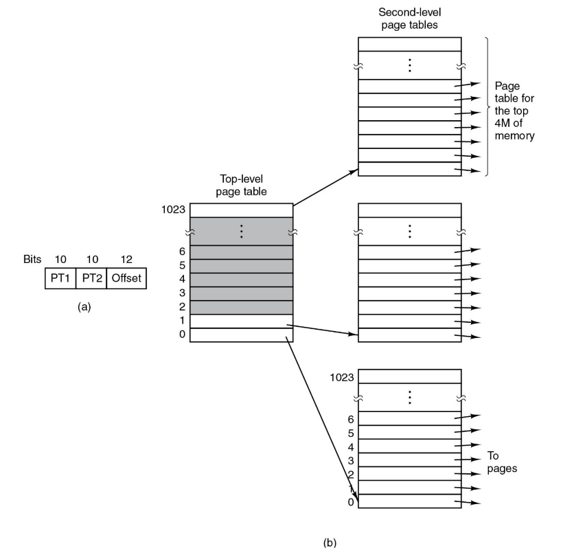 ha due livelli di tabelle
- La top level page table, contiene gli indirizzi che corrispondono alle tabelle di secondo livello
- CR3 è un registro che punta alla radice del top level page table
- la second level page table, contiene gli indirizzi effettivi delle pagine
2. PAGE TABLE A 4 LIVELLI X64
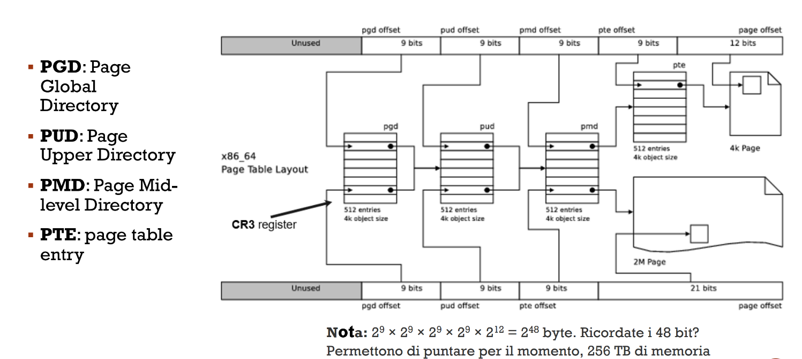 Le sigle a sinistra sono dei campi che servono per “navigare” nei vari livelli di gerarchia:
-
PGD: livello più alto che contiene i puntatori al livello successivo
-
PUD: contiene i puntatori al livello successivo
-
PMD: contiene i puntatori al PTE
-
PTE: contiene il numero del frame fisico, l’indirizzo finale viene calcolato aggiungendo l’offset alla base del frame
Quello da ricordare qui è che anche se il sistema è a 64 bit ne utilizza solo 48 perché bastano e avanzano per qualsiasi cosa odierna
ALGORITMI DI SOSTITUZIONE DELLE PAGINE
PAGE REPLACEMENT
quando una pagina non è in memoria e avviene un page fault, viene effettuato un page swap quando viene messa
LISTA DI TUTTI GLI ALGORITMI
1. Algoritmo Ottimale💩
2. **Not Recently Used (NRU)**👑
3. **First-In, First-Out (FIFO)**💩
4. Second-Chance Algorithm💩
5. Clock Algorithm👑
6. **Least Recently Used (LRU)**💩
8. Not Frequently Used con AGING (NFUA) 👑
9. Working Set Algorithm💩
10. WS Clock Algorithm👑
1. Algoritmo Ottimale💩
- dovrebbe prevedere quante volte viene utilizzata una pagina in un tot numero di istruzioni eseguite
- una pagina non viene usata da 8 milioni di istruzioni e una da 6 milioni, viene tolta quella da 8 milioni impossibile prevedere
2. Not Recently Used (NRU) 👑
utilizza i 2 bit di stato citati prima M(Modificato) e R(Referenziato) servono per identificare la pagina che deve essere eliminata scegliendola seguendo delle classi:
- ad ogni clock viene azzerato il bit di referenza
| classe | M | R |
|---|---|---|
| 0 | [ ] | [ ] |
| 1 | [x] | [ ] |
| 2 | [ ] | [x] |
| 3 | [x] | [x] |
| le scelte vanno in ordine da 0 a 3 |
3. First-In, First-Out (FIFO) 💩
applichi l’algoritmo FIFO con le pagine il primo ad entrare sarà il primo ad uscire
- elimina la più vecchia ma potrebbe ancora essere la più utilizzata
4. Second-Chance Algorithm 💩
È tipo FIFO ma dà una seconda chance a tutti prima di essere eliminati, la seconda chance la da modificando R
- R=1 hai ancora una chance
- R=0 non hai chance
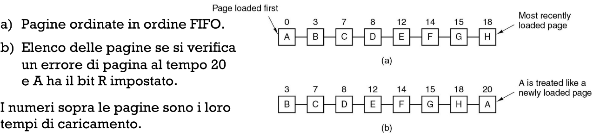 se tutte hanno R=1 non dà seconda chance a nessuno e opera come FIFO
5. Clock Algorithm 👑
funziona attraverso una lista collegata(che noi vediamo come un orologio) e un puntatore che punta a giro ad ogni elemento della lista collegata se R=0 elimina la pagina se R=1 azzera R +performante di seconda chance 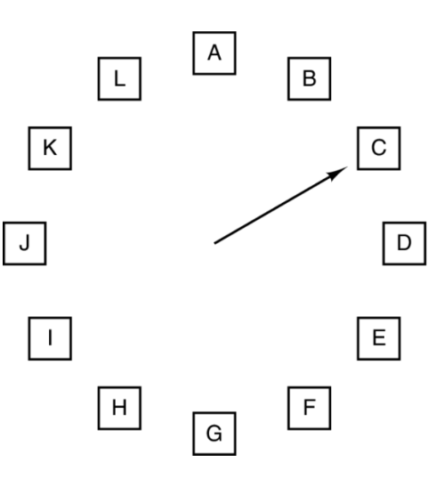
6. Least Recently Used (LRU) 💩
mettiamo in una lista le pagine in ordine di utilizzo, in testa la più usata in coda la meno usata e le tolgo così però non è molto attendibile e molto costosa come operazione perché devi sempre aggiornare la lista una piccola soluzione è associare ad ogni pagina un contatore a 64 bit conto quante volte uso una pagina e basta(tua figlia con i giochi) il discorso è che magari uso in modo concentrato la pagina per 1 giorno e poi non più ma al livello di contatore sembra che la uso sempre
7. Not Frequently Used con AGING (NFUA) 👑
shifto di 1 bit in un ciclo di clock e inserisco 1 se utilizzata o 0 se non viene utilizzata quindi avrò una sorta di età delle pagine elimino chi è più vecchio quindi chi ha numero più basso 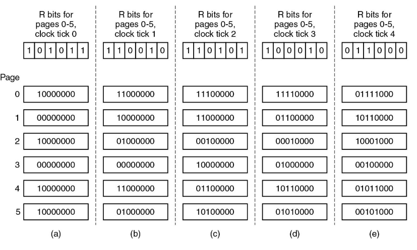
9. Working Set Algorithm💩
Ho il working Set che è un ambiente aggiornato che tiene conto
- dell’età della singola pagina
- se è stata o meno referenziata R
- definisco una variabile che rappresenta l’età massima per considerare una pagina nel working set Se avviene un page fault effettuo una ricerca per capire quale pagina togliere abbiamo 3 casi da analizzare per la singola pagina scelta in quel momento:
- R=1, aggiorno la tua età e anche la tua R
- R=0 e età della pagina la pagina viene rimossa dal working set
- R=0 e età della pagina questa viene salvata ma si va a prendere la più vecchia per una possibile rimozioni se tutti sono salvi viene selezionata la più vecchia con R=0 sennò una pagina a caso
10. WS Clock Algorithm👑
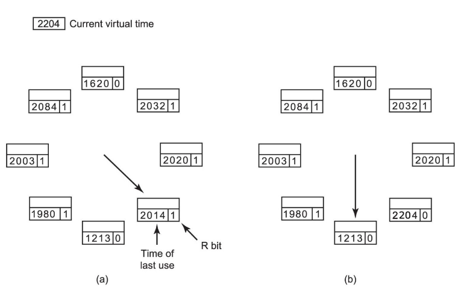 Ogni pagina ha una età e un bit di Referenziazione
-
Se il bit R=1, la pagina è stata usata nel ciclo del clock. Il bit viene impostato a 0.
- La lancetta avanza → figura b
-
Se R=0 (caso b dell’esempio) e l’età è maggiore di τ si controlla M:
-
M=0: non ha subito modifiche, nessun problema per un rimpiazzo
-
M=1: ha subito modifiche, non può essere rimpiazzata subito perché non ce n’è ancora una copia in memoria
-
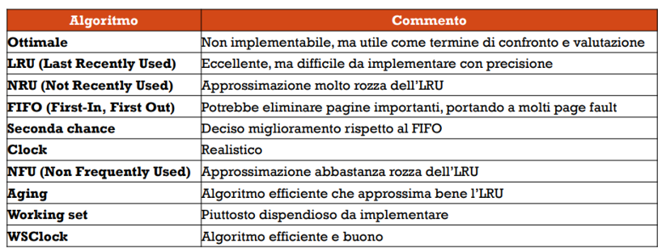